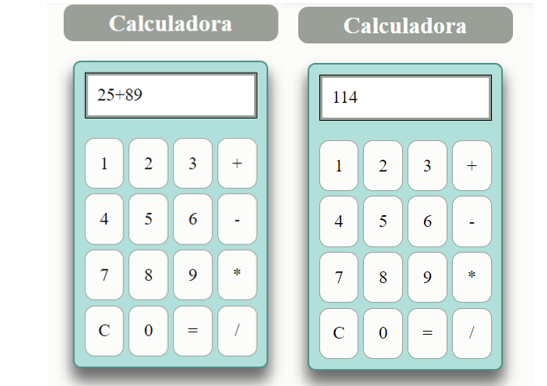
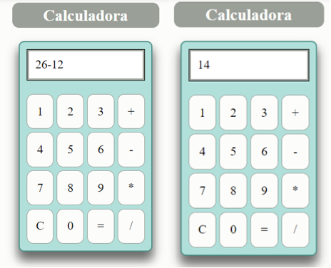

Suma
La suma o adición es la operación matemática que resulta al reunir en una sola varias cantidades. Las números que se suman se llaman sumandos y el resultado suma o total. Para su notación se emplea entre los sumandos el signo + que se lee "más".
La suma también ilustra el proceso de juntar dos colecciones de objetos con el fin de obtener una sola colección.
Ejemplo:
Resta
La resta o sustracción es una operación matemática que consiste en sacar, quitar, reducir o separar algo de un todo. Restar es una de las operaciones básicas de las matemáticas junto a la suma, que es su proceso inverso. De una forma más sencilla podríamos decir que cuando restamos estamos eliminando o quitando una cantidad de un conjunto de objetos.
Minuendo
Es la cantidad de la que partimos. El número al que en la operación aritmética de la resta se le quita otro (el sustraendo) para obtener el resultado o diferencia.
Sustraendo
Es la cantidad que se va a restar, a quitar. Elúmero que en la operación aritmética de la resta se ha de quitar a otro (el minuendo) para obtener el resultado o diferencia.
Ejemplo:
Multiplicación
La multiplicación es una operación binaria y derivada de la suma que se establece en un conjunto numérico. En aritmética, es una de las cuatro operaciones elementales, junto con la suma, la resta y la división, y es la operación inversa de esta última.
Multiplicar es una operación más eficaz que sumar muchas veces el mismo número. La palabra multiplicación viene del latín multiplicatio, que significa «aumentar el número de la misma cosa».
Ejemplo:

División
Definimos la división como aquella operación matemática que consiste en separar una cantidad en partes iguales, es decir, se trata de realizar una distribución equitativa del objeto o cosa que se quiere repartir. La multiplicación es la operación contraria a esta.
Por ejemplo, 20 manzanas se dividen en cinco grupos de cuatro manzanas, lo que significa que veinte dividido por cinco es igual a cuatro. Esto se denota como 20 / 5 = 4, o 205 = 4. Lo que se divide se llama el dividendo, que se divide por el divisor, y el resultado se llama el cociente.
Ejemplo: